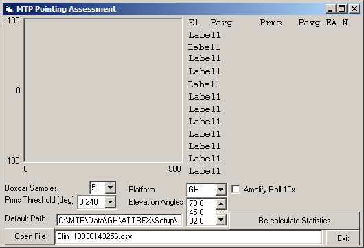
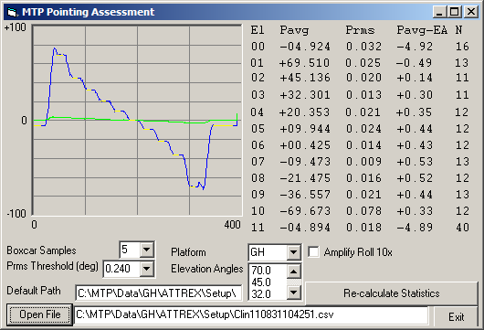
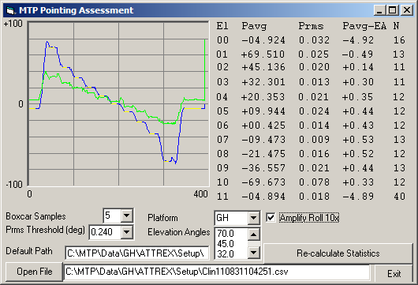

The MTP Pointing Analysis Program
MJ Mahoney
Revision Date: September 06, 2011
Setup
All the files necessary to run the MTP Pointing Analysis Program are in
a folder named Pointing. By default
this folder is on the path:
C:\MTP\VB6\VBP\MISC\Pointing\
If you want to install the Pointing
folder somewhere else you need to change one line of code in the frmPointing Form Load event. Here
are the first few lines of code:
Private Sub
Form_Load()
Dim lu%, a$,
AC$
PointingPath$ =
"C:\MTP\VB6\VBP\Misc\Pointing\"
lu =
FreeFile
Open
"C:\MTP\VB6\VBP\Misc\Pointing\Pointing.INI" For Input As lu
Line
Input #lu, a$
txtPath.Text = a$
Line
Input #lu, AC$
Close
lu
DoEvents
Just change the PointingPath$
to be wherever you put the Pointing
folder.
There are two initialization files in the Pointing folder: Pointing.INI and Elevation.INI. Pointing.INI contains two lines:
the first is the path to where the pointing measurement CSV files are
stored, and the second line is the name of the platform that the MTP
will be fying on. Valid platform names are: GH, NGV, DC8, ER2, WB57,
M55 and HALO. Here is an example of the Pointing.INI file:
C:\MTP\Data\GH\ATTREX\Setup\
GH
The platform name is needed so that the program knows what the valid
pointing elevation angles should be. These are loaded from the Elevation.INI file in the Pointing folder. Here is the
complete Elevation.INI file:
[PLATFORM]
DC8
ER2
WB57
M55
NGV
GH
HALO
[ELEV_DC8]
+80.0
+55.0
+42.0
+25.0
+12.0
+0.0
-12.0
-25.0
-42.0
-80.0
[ELEV_ER2]
+60.0
+44.4
+30.0
+17.5
+8.6
+0.0
-8.6
-20.5
-36.9
-58.2
[ELEV_WB57]
+70.0
+45.0
+32.0
+20.0
+9.5
+0.0
-10.0
-22.0
-37.0
-70.0
[ELEV_M55]
+55
+38
+24
+12
+0
-10
-21
-34
-49
-70
[ELEV_NGV]
+80.0
+55.0
+42.0
+25.0
+12.0
+0.0
-12.0
-25.0
-42.0
-80.0
[ELEV_GH]
+70.0
+45.0
+32.0
+20.0
+9.5
+0.0
-10.0
-22.0
-37.0
-70.0
[EOF]
These are the default elevation angles used by each platform. If they
should change, then this file needs to be editted to reflect the
changes. Note that the first entry in the Elevation.INI file is a list of
valid platforms. These are provided so that Platform combo box can be filled
with the list of valid platforms. If you want to change the target
platform for the pointing measurements, you must change it on the
second line of the Pointing.INI file.
The MTP Pointing Assessment Program

The figure above shows the MTP
Pointing Assessment Program form when the program is started.
The program has loaded the Default
Path text box from the first line of the Pointing.INI file, and the Platform name (in this case the
Global Hawk, GH) from the second line of the Pointing.INI file. This in turn
causes the default Elevation Angles
to be loaded from the Elevation.INI
file.
To show the data from a CSV measurement file, simply click the Open File button to open the CSV
file. The following display will be seen.

As is apparent, the CSV file is read, plotted, and pointing statistics
are calculated. The pitch measurements are shown in blue, the roll
measurements are shown in green, and the range over which the
statistics are calculated is shown in yellow.
The Algorithm
The algorithm used is very simple. It is based on the fact that if you
boxcar average consecutive inclinometer pitch and roll measurements,
they will have a large variance (RMS) when the scan mirror is moving,
and a small variance when it is at a commanded elevation angle. The Boxcar Samples combo box indicates
how many inclinometer measurements from the CSV file should be averaged
for the pointing assessment. The Prms
Threshold (deg) combo box shows the maximum variance on the
boxcar average that will be allowed for the assessment. If the RMS is
larger than the Prms Threshold (deg)
it will not be used. The second and third columns of the statistics
simply list the average measured pitch (Pavg) and its RMS (Prms). The fourth column displays
the results, Pavg - EA, where
the EA are the elevation angles that are desired and which are listed
in the list box next to th Elevation
Angles label. The last column, the fifth, gives the number of
measurements that met the RMS
Threshold criterium for each elevation angle.
Note that if the averaged points are not all consecutive, then things
will get out of synch. This generally means that the Prms Threshold
(deg) must be increased. Click the Re-calculate
Statistics button to update the display. Whenever pointing
statistics are calculated, they are written to the Pointing.txt file in the Default Path.
Finally, if the Amplify Roll 10x
checkbox is checked, the left hand picture box will multipy the roll
measurements by a factor of 10 so that they are more visible, as shown
below.

The End